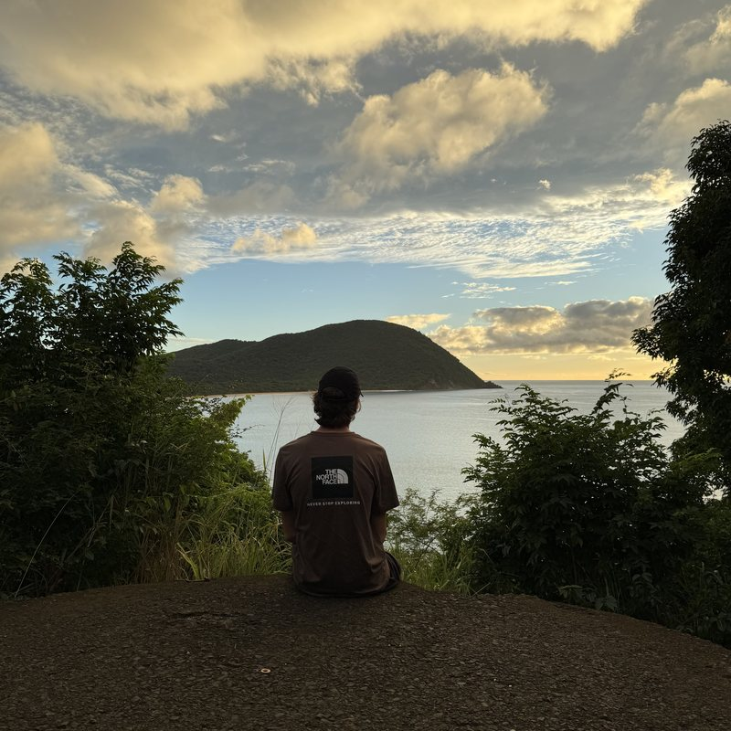

Profil / 01
Jacob
Allen.
Étudiant en techniques de l’informatique

Profil / 01
Étudiant en techniques de l’informatique

En ce moment / 02
Je transforme ma curiosité pour les réseaux et Linux en projets concrets — un service, un conteneur et une idée à la fois.
Voir mes projetsMon parcours / 03
Découvrir mon histoire, ce que j’apprends et ce qui m’anime loin des écrans.
Base / 04
Connecté au réseau.
Souvent dehors.
Setup / 05
Bons plans / 07
Je peux recevoir un avantage si vous passez par ces liens, sans coût supplémentaire pour vous.